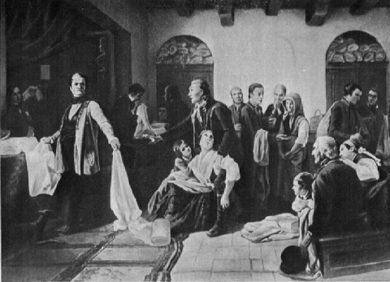

Articles for The New Moral World by Frederick Engels
Source: MECW Volume 4, p. 237
Written: between November 9, 1844, and April 5, 1845;
Published: in The New Moral World, Nos. 25, 37 and 46, December 13, 1844, March 8 and May 10, 1845.
Hoping, as I do, that your countrymen will be glad to hear something on the progress of our common cause on this side of the channel, I send you a few lines for your paper. At the same time, I rejoice in being able to show that the German people, though, as usual, rather late in mooting the question of Social Reform, are now exerting themselves to make up for lost time. Indeed, the rapidity with which Socialism has progressed in this country is quite miraculous. Two years ago, there were but two solitary individuals who cared at all about Social questions; a year ago, the first Socialist publication was printed. [Deutsch-Französische Jahrbücher] It is true, there were some hundreds of German Communists in foreign countries; but being working men, they had little influence, and could not get their publications circulated among the “upper classes”. Besides, the obstacles in the way of Socialism were enormous; the censorship of the press, no right of public meeting, no right of association, and despotic laws and secret courts of law, with paid judges to punish every one who in any way dared to set the people about thinking. And notwithstanding all this, what is the state of things in Germany now? Instead of the two poor devils who wrote about Socialism to a public no ways acquainted with, or interested in the question, we have dozens of clever writers preaching the new gospel to thousands who are anxious to hear everything connected with the subject; we have several papers as radically Socialist as the censorship will allow, principally the Trier’sche Zeitung (Gazette of Trier), and the Sprecher (Speaker) of Wesel; we have a paper published under the free press of Paris, [Vorwärts!] and there is no periodical, save those under the immediate influence of the governments, but comments every day, and in very creditable terms, upon Socialism and the Socialists. Our very opponents want the moral courage to speak their full minds against us. Even the governments are obliged to favour all legal movements in the direction towards Socialism. Societies are forming everywhere for ameliorating the condition of the working people, as well as for giving them the means to cultivate their minds, and some of the highest officers of the Prussian Government have taken an active part in those associations. In short, Socialism is the question of the day in Germany, and in the space of a year, a strong Socialist party has grown up, which already now commands the respect of all political parties, and is principally courted by the liberals of this country. Up to the present time our stronghold is the middle class, a fact which will perhaps astonish the English reader, if he do not know that this class in Germany is far more disinterested, impartial, and intelligent, than in England, and for the very simple reason, because it is poorer. We, however, hope to be in a short time supported by the working classes, who always, and everywhere, must form the strength and body of the Socialist party, and who have been aroused from their lethargy by misery, oppression, and want of employment, as well as by the manufacturing riots in Silesia and Bohemia. [79]

Let me on this occasion mention a painting by one of the best German painters, Hübner, which has made a more effectual Socialist agitation than a hundred pamphlets might have done. It represents some Silesian weavers bringing linen cloth to the manufacturer, and contrasts very strikingly cold-hearted wealth on one side, and despairing poverty on the other. The well-fed manufacturer is represented with a face as red and unfeeling as brass, rejecting a piece of cloth which belongs to a woman; the woman, seeing no chance of selling the cloth, is sinking down and fainting, surrounded by her two little children; and hardly kept up by an old man; a clerk is looking over a piece, the owners of which are with painful anxiety waiting for the result; a young man shows to his desponding mother the scanty wages he has received for his labour; an old man, a girl, and a boy, are sitting on a stone bench, and waiting for their turn; and two men, each with a piece of rejected cloth on his back, are just leaving the room, one of whom is clenching his fist in rage, whilst the other, putting his hand on his neighbour’s arm, points up towards heaven, as if saying: be quiet, there is a judge to punish him. This whole scene is going on in a cold and unhomely-looking lobby, with a stone floor: only the manufacturer stands upon a piece of carpeting; whilst on the other side of the painting, behind a bar, a view is opened into a luxuriously furnished counting-house, with splendid curtains and looking-glasses, where some clerks are writing, undisturbed by what is passing behind them, and where the manufacturer’s son, a young, dandy-like gentleman, is leaning over the bar, with a horsewhip in his hand, smoking a cigar, and coolly looking at the distressed weavers. The painting has been exhibited in several towns of Germany, and, of course, prepared a good many minds for Social ideas. At the same time, we have hid the triumph of seeing the first historical painter of this country, Charles Lessing, become a convert to Socialism. In fact, Socialism occupies at this moment already a ten times prouder position in Germany than it does in England. This very morning, I read an article in a liberal paper, the Cologne Journal, the author of which had for some reasons been attacked by the Socialists, and in which article he gives his defence [80]; and to what amounts it? He professes himself a Socialist, with the only difference that he wants political reforms to begin with, whilst we want to get all at once. And this Cologne Journal is the second newspaper of Germany in influence and circulation. It is curious, but, at least in the north of Germany, you cannot go on board a steamer, or into a railway-carriage, or mail-coach, without meeting somebody who has imbibed at least some Social idea, and who agrees with you, that something must be done to reorganise society. I am just returning from a trip to some neighbouring towns, and there was not a single place where I did not find at least half-a-dozen or a dozen of out-and-out Socialists. Among my own family — and it is a very pious and loyal one-I count six or more, each of which has been converted without being influenced by the remainder. We have partisans among all sorts of men — commercial men, manufacturers, lawyers, officers of the government and of the army, physicians, editors of newspapers, farmers, etc., a great many of our publications are in the press, though hardly three or four have as yet appeared; and if we make as much progress during the next four or five years as we have done in the past twelve months, we shall be able to erect forthwith a Community. You see, we German theorists are getting practical men of business. In fact, one of our number has been invited to draw up a plan of organisation and regulations for a practical Community, with reference to the plans of Owen, Fourier, etc., and profiting of the experience gained by the American Communities and your own experiment at Harmony, which I hope goes on prosperously. This plan will be discussed by the various localities and printed with the amendments. The most active literary characters among the German Socialists are: — Dr. Charles Marx, at Paris; Dr. M. Hess, at present at Cologne; Dr. Ch. Grün, at Paris; Frederick Engels, at Barmen (Rhenan Prussia); Dr. O. Lüning, Rheda, Westphalia; Dr. H. Püttmann, Cologne; and several others. Besides those, Henry Heine, the most eminent of all living German poets, has joined our ranks, and published a volume of political poetry, which contains also some pieces preaching Socialism. He is the author of the celebrated Song of the Silesian Weavers, of which I give you a prosaic translation, but which, I am afraid, will be considered blasphemy in England. At any rate, I will give it you, and only remark, that it refers to the battle-cry of the Prussians in 1813: — “With God for King and fatherland!” which has been ever since a favourite saying of the loyal party. But for the song, here it is [81]; —
Without a tear in their grim eyes,
They sit at the loom, the rage of despair in their faces;
"We have suffered and hunger'd long enough;
Old Germany, we are weaving a shroud for thee
And weaving it with a triple curse.
"We are weaving, weaving!
“The first curse to the God, the blind and deaf god
Upon whom we relied, as children on their father;
In whom we hoped and trusted withal,
He has mocked us, he has cheated us nevertheless.
"We are weaving, weaving!
“The second curse for the King of the rich,
Whom our distress could not soften nor touch;
The King, who extorts the last penny from us,
And sends his soldiers, to shoot us like dogs.
"We are weaving, weaving!
“A curse to the false fatherland,
That has nothing for us but distress and shame,
Where we suffered hunger and misery-
We are weaving thy shroud, Old Germany!
"We are weaving, weaving!”
With this song, which in its German original is one of the most powerful poems I know of, I take leave from you for this time, hoping soon to be able to report on our further progress and social literature.
Yours sincerely,
An old friend of yours in Germany
Barmen, Feb. 2nd, 1845 [82]
Since I last addressed you, the cause of Communism has been making the same rapid progress as during the latter part of the year 1844. A short time ago I visited several towns on the Rhine, and everywhere I found that our ideas had gained, and were daily gaining more vantage ground than when I last left those places. Everywhere I found fresh proselytes, displaying as much energy in discussing and spreading the idea of Communism as could possibly be desired. A great many public meetings have been held in all the towns of Prussia, for the purpose of forming associations to counteract the growing pauperism, ignorance and crime among the great mass of the population.[83] These meetings, at first supported, but when becoming too independent, checked by the Government, have, nevertheless, forced the Social question upon the public attention, and have done a great deal towards the dissemination of our principles. The meeting at Cologne was struck so much by the speeches of the leading Communists, that a committee for drawing up the rules of the association was elected, the majority of which consisted of thorough Communists. The abstract of rules was, of course, founded upon Communist principles; organisation of labour, protection of labour against the power of capital, &c., and those rules were adopted almost unanimously by the meeting. Of course the sanction of Government, which is necessary in this country for all associations, has been refused; but since those meetings have been held, the question of communities has been discussed everywhere throughout Cologne. At Elberfeld, it was pronounced as the fundamental principle of the association, that all men had an equal right to education, and ought to participate in the fruits of science. The rules of the association, however, have not yet been confirmed by the Government, and in all probability they will share in the lot of the Cologne rules, as the parsons got up an association of their own as soon as their plan, to make the Society a branch of the town mission, had been rejected by the meeting. The liberal association will be prohibited, and the parsons’ association will be supported by Government. This, however, is of the little importance as the question having been mooted once, is now generally discussed throughout the town. Other associations have been formed at Munster, Cleve, Düsseldorf, etc., and it remains to be seen what the results will be. As to Communist literature, a collection of papers relating to this subject has been published by H. Püttmann, of Cologne, containing among the rest, an account of the American communities, as well as of your own Hampshire Establishment, which has done very much towards annihilating the prejudice of the impracticability of our ideas.[84] Mr. Püttmann, at the same time, has issued the prospectus of a quarterly review,[85] the first number of which he intends issuing in May next, and which will be exclusively dedicated to the promulgation of our ideas. Another monthly periodical [86] will be commenced by Messrs. Hess of Cologne, and Engels of Barmen, the first number to be published on the first of April next; this periodical will contain facts only, showing the state of civilised society, and preaching the necessity of a radical reform by the eloquence of facts. A new work by Dr. Marx, containing a review of the principles of Political Economy, and politics in general, will be published shortly. Dr. Marx himself has been forced by the French Conservative Government, to quit his abode at Paris. [87] He intends to go to Belgium, and if the vengeance of the Prussian Government (which has induced the French Ministers to expel Marx) follows him even there, he must go to England. But the most important fact which has come to my knowledge since my last, is, that Dr. Feuerbach, the most eminent philosophical genius in Germany at the present time, has declared himself a Communist. A friend of ours lately visited him in his retired country seat, in a remote corner of Bavaria, and to him he declared his full conviction that Communism was only a necessary consequence of the principles he had proclaimed, and that Communism was, in fact, only the practice of what he had proclaimed long before theoretically. Feuerbach said, he had never been delighted so much with any other book, as with the first part of Weitling’s Guarantees [W. Weitling, Garantien der Harmonie und Freiheit] I never dedicated, he said, a book to anybody, but I feel much inclined to dedicate to Weitling my next work. Thus the union between the German philosophers, of whom Feuerbach is the most eminent representative, and the German working men represented by Weitling, an union which, a year ago, had been predicted by Dr. Marx [K. Marx, Contribution to the Critique of Hegel’s Philosophy of Law. Introduction], is all but accomplished. With the philosophers to think, and the working men to fight for us, will any earthly power be strong enough to resist our progress?
An old friend of yours in Germany
Dear sir,
Having been unable, for a time, from certain causes, to write you on the state of affairs in Germany, I now continue my reports, hoping that they will interest your readers, and follow each other more uninterruptedly than heretofore. I am glad of being enabled to tell you that we are making the same rapid and steady progress which we made up to my last report. Since I wrote to you last, the Prussian Government have found it unsafe to continue their support to the “Associations for the Benefit of the Working Classes”. They have found that everywhere these associations became infected with something like Communism, and therefore they have done everything in their power to suppress, or at least obstruct, the progress of these associations. On the other hand, the majorities of the members of those societies, being composed of middle-class men, were totally at a loss with regard to the steps they might take to benefit the working people. All their measures — savings-banks, premiums and prizes for the best workers, and such like, — were instantly proved by the Communists to be good for nothing, and held up to public laughter. Thus the intention of the middle classes, to dupe the working classes, by hypocrisy and sham philanthropy, has been totally frustrated; while to us it gave an opportunity which is rather rare in a Country of patriarchal police government: thus the trouble of the matter has been with the Government and the moneyed men, while we have had all the profit.
But not only these meetings were taken profit of for Communist agitation: at Elberfeld, the centre of the manufacturing district of Rhenan Prussia, regular Communist meetings were held. The Communists of this town were invited by some of the most respectable citizens to discuss their principles with them. The first of these meetings took place in February, and was more of a private character. About forty or fifty individuals assisted, including the attorney-general of the district, and other members of the courts of law, as well as representatives of almost all the leading commercial and manufacturing firms. Dr. Hess, whose name I have had more than once an opportunity of mentioning in your columns, opened the proceedings by proposing Mr. Koettgen, a Communist, as chairman, to which no opposition was made. Dr. Hess then read a lecture on the present state of society, and the necessity of abandoning the old system of competition, which he called a system of downright robbery. The lecture was received with much applause (the majority of the audience being Communists); after which Mr. Frederick Engels (who some time ago had some papers on Continental Communism printed in your columns) spoke at some length on the practicability and the advantages of the Community system. He also gave some particulars of the American colonies and your own establishment at Harmony in proof of his assertions. After which a very animated discussion took place, in which the Communist side was advocated by the foregoing speakers and several others; while the opposition was maintained by the attorney-general, by Dr. Benedix, a literary character, and some others. The proceedings, which commenced about nine o'clock in the evening, were continued until one in the morning.
The second meeting took place a week after, in the large room of the first hotel in the town. The room was filled with the “respectables” of the place. Mr. Koettgen, chairman of the former meeting, read some remarks on the future state and prospects of society, as imagined by the Communists, after which Mr. Engels delivered a speech in which he proved (as may be concluded from the fact, that not a word was offered in reply), that the present state of Germany was such as could not but produce in a very short time a social revolution; that this imminent revolution was not to be averted by any possible measures for promoting commerce and manufacturing industry; and that the only means to prevent such a revolution — a revolution more terrible than any of the mere subversions of past history-was the introduction of, and the preparation for, the Community system. The discussion, in which some gentlemen of the profession of the bar, who had come from Cologne and Düsseldorf for the purpose, took part on the Communist side, was again very animated, and prolonged till after midnight. Some Communist poems, by Dr. Müller of Düsseldorf, who was present, were also read.
A week afterwards a third meeting took place in which Dr. Hess again lectured, and besides, some particulars about the American communities were read from a printed paper. The discussion was repeated before the close of the meeting.
Some days afterwards a rumour was spread through the town that the next meeting was to be dispersed by the police, and the speakers to be arrested. The mayor of Elberfeld, indeed, went to the hotel-keeper, and threatened to withdraw the licence, if any such meetings in future should be allowed to take place in his house. The Communists instantly communicated with the mayor about the matter, and received, the day before the next meeting, a circular directed to Messrs. Hess, Engels and Koettgen, by which the provincial Government, with a tremendous amount of quotations from ancient and written laws, declared such meetings to be illegal, and threatened to ‘put a stop to them by force, if they should not be abandoned. The meeting took place next Saturday [March 1, 1845] the mayor and the attorney-general (who after the first meeting had absented himself) were present, supported by a troop of armed police, who had been sent by railroad from Düsseldorf. Of course, under such circumstances, no public addresses were delivered: the meeting occupied themselves with beef-steaks and wine, and gave the police no handle for interference.
These measures, however, could not but serve our cause: those who had not yet heard of the matter were now induced to ask for information about it from the importance ascribed to it by the Government; and a great many of those who had come to the discussion ignorant or scoffing at our proposals, went home with a greater respect for Communism. This respect was also partially produced by the respectable manner in which our party was represented; nearly every patrician and moneyed family of the town had one of its members or relatives present at the large table occupied by the Communists. In short the effect produced by these meetings upon the public mind of the whole manufacturing district was truly wonderful; and in a few days afterwards those who had publicly advocated our cause were overrun by numbers of people who asked for books and papers from which they might get a view of the whole system. We understand that the whole proceedings will shortly be published.
As to Communist literature, there has been exhibited a great activity in this branch of agitation. The public literally long for information: they devour every book published in this line. Dr. Püttmann has published a collection of essays [Deutsches Bürgerbuch für 1845], containing an excellent paper by Dr. Hess, on the distress of modern society, and the means of redressing it [M. Hess, Über die Noth in unserer Gesellschaft und deren Abhülfe]; a detailed description of the distressing state of the working people of Silesia, with a history of the riots of last spring; some other articles descriptive of the state of society in Germany; and, finally, an account of the American and Harmony communities (from Mr. Finch’s letters and that of “One who has whistled at the Plough”), by F. Engels. The book, though prosecuted by the Prussian Government, met with a rapid sale in all quarters. A number of monthly periodicals have been established: the Westphalian Steamboat [Das Westphälische Dampfboot], published at Bielefeld, by Lüning, containing popular essays on Socialism and reports on the state of the working people; the People’s Journal [Allgemeines Volksbtatt] at Cologne, with a more decided Socialist tendency; and the Gesellschaftsspiegel (Mirror of Society), at Elberfeld, by Dr. Hess, founded expressly for the publication of facts characteristic of the present state of society, and for the advocacy of the rights of the working classes. A quarterly review, the Rheinische Jahrbücher (Rhenish Annals), by Dr. Püttmann, has also been established; the first number is now in the press and will shortly be published.
On the other hand, a war has been declared against those of the German philosophers, who refuse to draw from their mere theories practical inferences, and who contend that man has nothing to do but to speculate upon metaphysical questions. Messrs. Marx and Engels have published a detailed refutation of the principles advocated by B. Bauer; and Messrs. Hess and Bürgers are engaged in refuting the theory of M. Stirner: — Bauer and Stirner being the representatives of the ultimate consequences of abstract German philosophy, and therefore the only important philosophical opponents of Socialism — or rather Communism, as in this country the word Socialism means nothing but the different vague, undefined, and undefinable imaginations of those who see that something must be done, and who yet cannot make up their minds to go the whole length of the Community system.
In the press are also-Dr. Marx’s Review of Politics and Political Economy; Mr. F. Engels’ Condition of the Working Classes of Great Britain; Anecdota, or a Collection of Papers on Communism [88]; and in a few days will be commenced a translation of the best French and English works on the subject of Social Reform.[89]
In consequence of the miserable political state of Germany, and the arbitrary proceedings of her patriarchal governments, there is hardly a chance of any but a literary connection between the Communists of the different localities. The periodicals, principally the Rhenish Annals, offer a centre for those who, by the press, advocate Communism. Some connection is kept up by travellers, but this is all. Associations are illegal, and even correspondence is unsafe, as the “secret offices” [90] of late have displayed an unusual activity. Thus it is only by the newspapers that we have received the news of the existence of two Communist associations in Posen and the Silesian mountains. It is reported that at Posen, the capital of Prussian Poland, a number of young men had formed themselves into a secret society, founded upon Communist principles, and with the intention of taking possession of the town; that the plot was discovered, and its execution prevented: this is all we know about the matter. This much, however, is certain, that a great many young men of aristocratic and wealthy Polish families have been arrested; that since (more than two months) all watch posts are doubled and provided with ball cartridge; and that two youths (of 12 and 19 years respectively), the brothers Rymarkiewicz, have absconded, and not yet been got hold of by the authorities. A great number of the prisoners are youths of from 12 to 20 years. The other so-called conspiracy, in the Silesian mountains, is said to have been very extensive, and also for a Communist purpose: they are reported to have intended to take the fortress of Schweidnitz, to occupy the whole range of mountains, and to appeal from thence to the suffering workpeople of all Germany. How far this may be true, nobody is able to judge; but in this unfortunate district, also, arrests have taken place on the depositions of a police spy; and a wealthy manufacturer, Mr. Schlöffel, has been transported to Berlin, where he is now under trial, as the supposed head of the conspiracy.
The associations of German Communists of the working classes in Switzerland, France and England continue to be very active; though in France, and some parts of Switzerland, they have much to suffer from the police. The papers announce that about sixty members of the Communist association of Geneva have been expelled from the town and canton. A. Becker, one of the cleverest of the Swiss Communists, has published a lecture delivered at Lausanne, entitled, “What do the Communists Want?” [A. Becker, “Was wollen die Kommunisten?"] which belongs to the best and most spirited things of the sort we know of. I dare say it would merit an English translation, and I should be glad if any of your readers were acquainted enough with the German language to undertake it. It is, of course, only a small pamphlet.
I expect to continue my reports from time to time, and remain, etc.
An old friend of yours in Germany